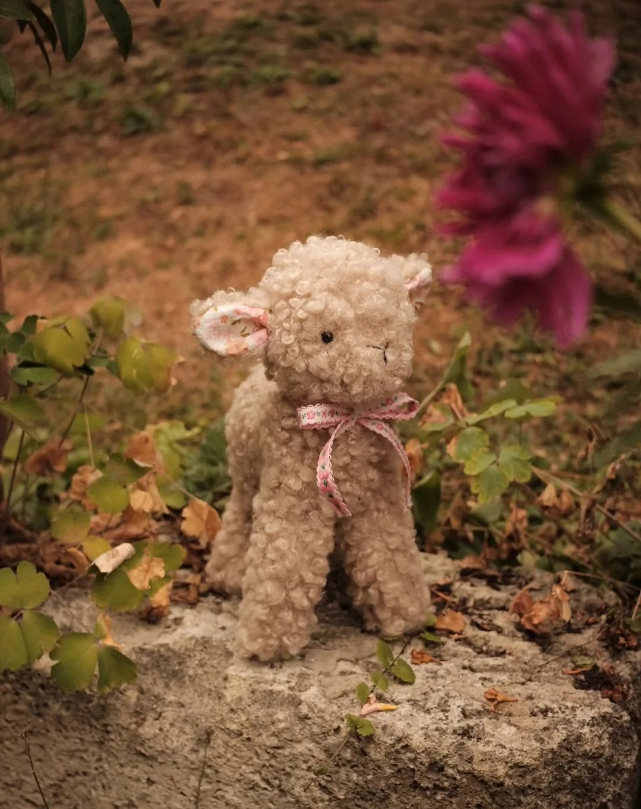
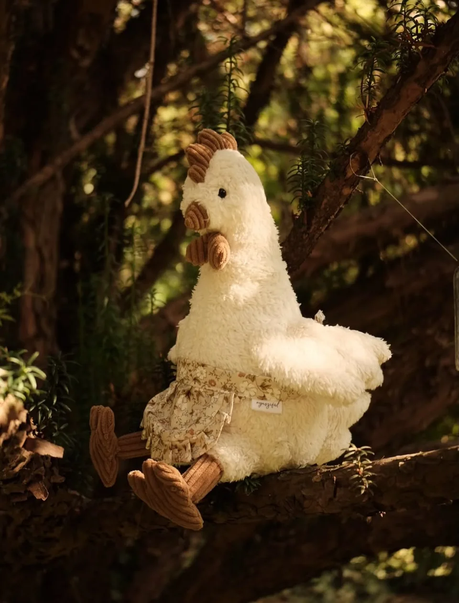
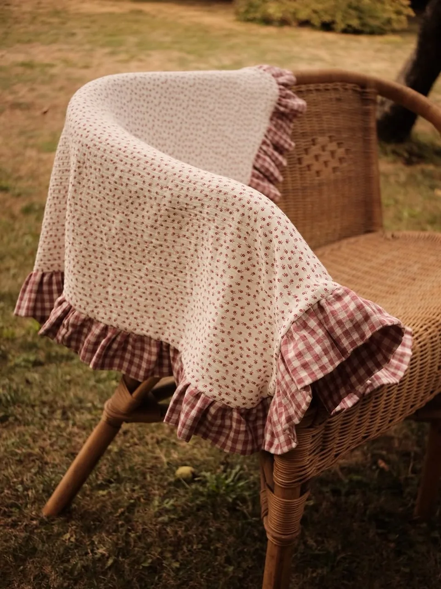
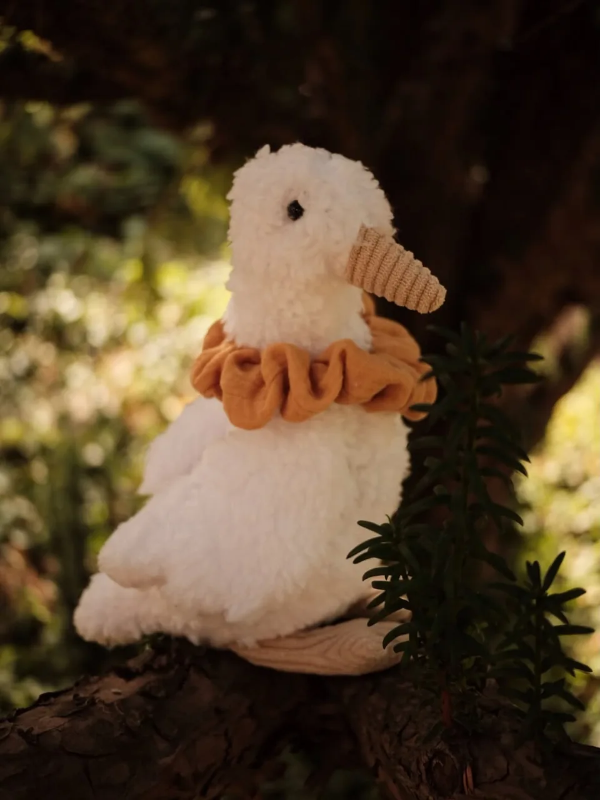
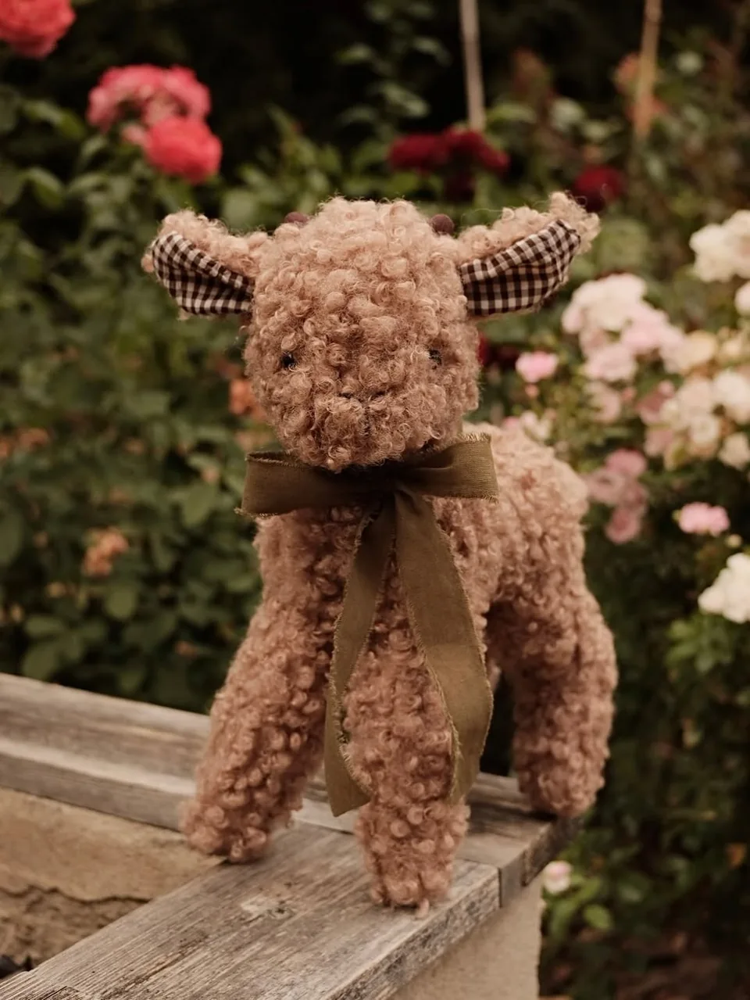
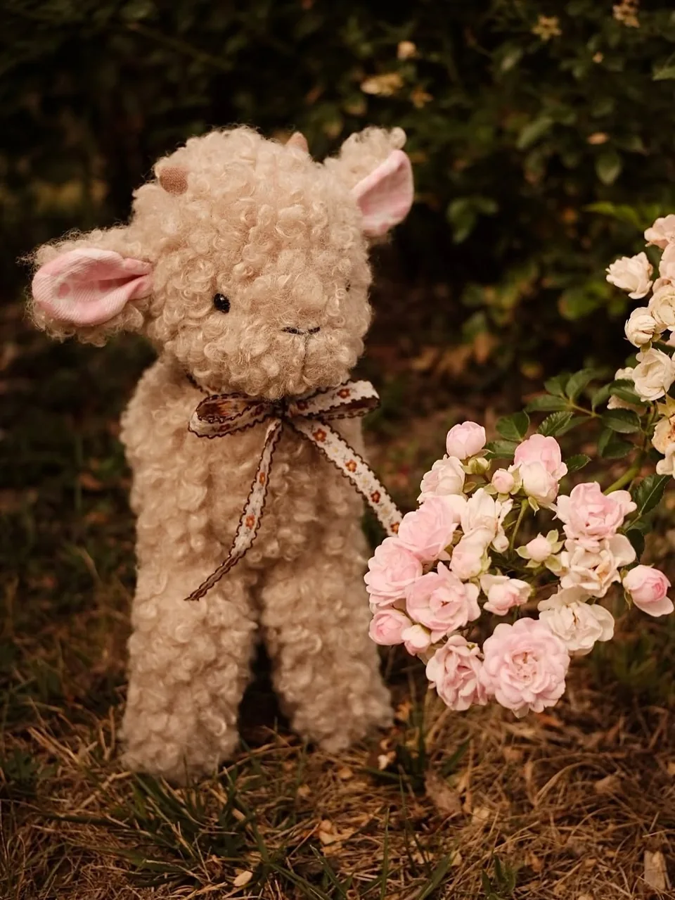
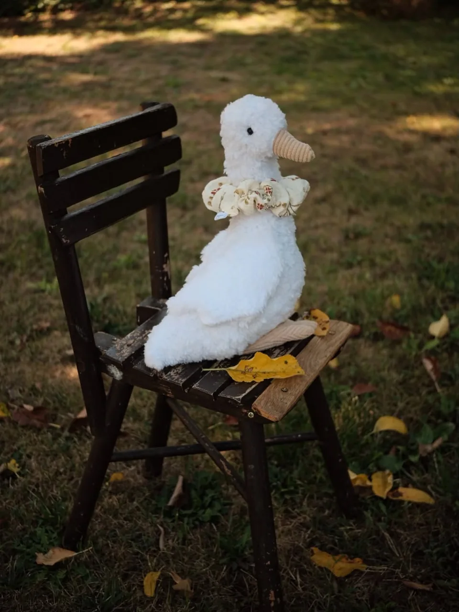

MegnézemKézzel készült darabok
A farm lakói
Bárányok, libák, textíliák. Találd meg a hozzád illő darabot.

Megnézem
Megnézem
Megnézem
Megnézem
Megnézem
MegnézemNincs ilyen találat
Próbálj másik nevet vagy kategóriát.